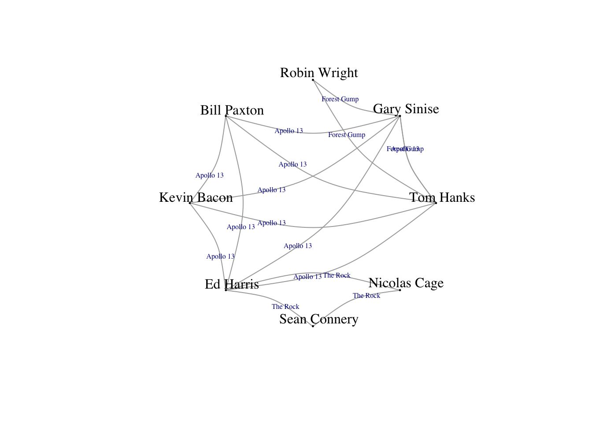

Chapter 4 Elementos de una red
- nodos o vértices de grafo (nodes, vertices)
## [1] "Tom Hanks" "Gary Sinise" "Bill Paxton" "Kevin Bacon" "Ed Harris"
## [6] "Sean Connery" "Robin Wright" "Nicolas Cage"- arcos o enlaces (edges, links)
## [,1] [,2]
## [1,] "Tom Hanks" "Gary Sinise"
## [2,] "Tom Hanks" "Robin Wright"
## [3,] "Gary Sinise" "Robin Wright"
## [4,] "Tom Hanks" "Gary Sinise"
## [5,] "Tom Hanks" "Bill Paxton"
## [6,] "Tom Hanks" "Kevin Bacon"
## [7,] "Tom Hanks" "Ed Harris"
## [8,] "Gary Sinise" "Bill Paxton"
## [9,] "Gary Sinise" "Kevin Bacon"
## [10,] "Gary Sinise" "Ed Harris"
## [11,] "Bill Paxton" "Kevin Bacon"
## [12,] "Bill Paxton" "Ed Harris"
## [13,] "Kevin Bacon" "Ed Harris"
## [14,] "Ed Harris" "Sean Connery"
## [15,] "Ed Harris" "Nicolas Cage"
## [16,] "Sean Connery" "Nicolas Cage"Nodos y arcos pueden contender atributos adicionales con importante información:
## [1] "Forest Gump" "Forest Gump" "Forest Gump" "Apollo 13" "Apollo 13"
## [6] "Apollo 13" "Apollo 13" "Apollo 13" "Apollo 13" "Apollo 13"
## [11] "Apollo 13" "Apollo 13" "Apollo 13" "The Rock" "The Rock"
## [16] "The Rock"
4.1 Representación de redes
4.1.1 Grafos como listas de arcos
data.frame o matriz (si los datos del mismo tipo) que contiene dos columnas:
- primera columna: nodos que son el origen de una conexión
- segunda columna: nodos que son el destino de la conexión
Si el sentido es importante, la red se denomina dirigida, en otro caso, no dirigida.
alumnos1 <- c("Luis", "Ana", "Fran", "Pedro", "Laura", "Susana")
alumnos2 <- c("Juan", "Jose", "Amalia", "Lucía", "Maite", "Eduardo")
grupos <- data.frame(integrante1 = alumnos1, integrante2 = alumnos2, stringsAsFactors = F)
print(grupos)## integrante1 integrante2
## 1 Luis Juan
## 2 Ana Jose
## 3 Fran Amalia
## 4 Pedro Lucía
## 5 Laura Maite
## 6 Susana Eduardostr(grupos)## 'data.frame': 6 obs. of 2 variables:
## $ integrante1: chr "Luis" "Ana" "Fran" "Pedro" ...
## $ integrante2: chr "Juan" "Jose" "Amalia" "Lucía" ...4.1.2 Grafos como matrices
# Se pueden usar matrices 'sparse'
A <- rbind(c(0,1,0), c(1,0,1), c(1,0,0))
nodeNames <- c("A","B","C")
dimnames(A) <- list(nodeNames, nodeNames)
A## A B C
## A 0 1 0
## B 1 0 1
## C 1 0 0str(A)## num [1:3, 1:3] 0 1 1 1 0 0 0 1 0
## - attr(*, "dimnames")=List of 2
## ..$ : chr [1:3] "A" "B" "C"
## ..$ : chr [1:3] "A" "B" "C"Caminos de longitud dos, tres, etc:
# Multiplicación matricial
A2 <- A %*% A
A2## A B C
## A 1 0 1
## B 1 1 0
## C 0 1 0A3 <- A %*% A %*% A
A3## A B C
## A 1 1 0
## B 1 1 1
## C 1 0 1Representado arcos:
Arcos <- rbind(c("A","B"), c("B","A"), c("B","C"), c("C","A"))
Arcos## [,1] [,2]
## [1,] "A" "B"
## [2,] "B" "A"
## [3,] "B" "C"
## [4,] "C" "A"